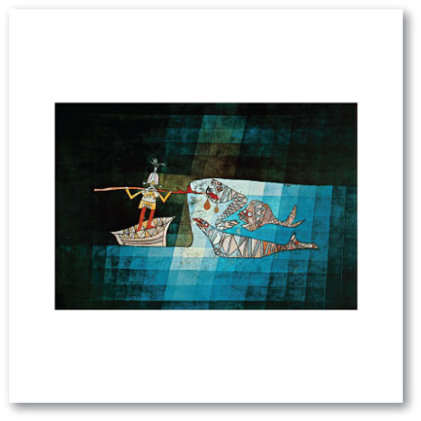
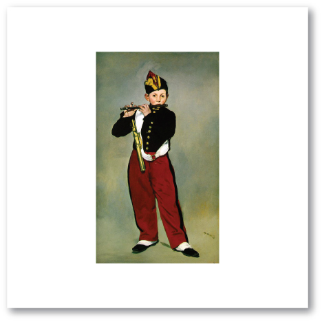
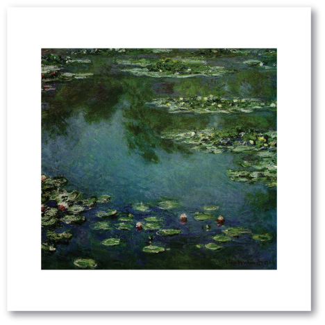
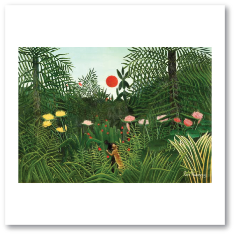
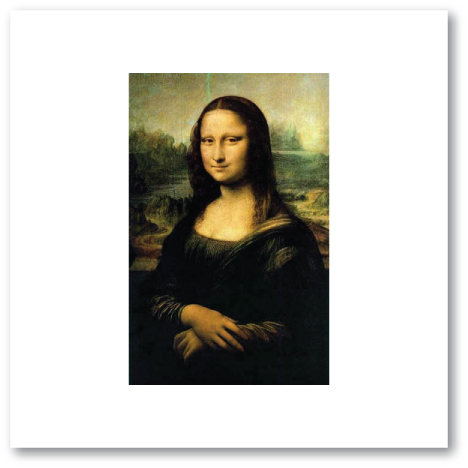

Music: “Sinbad at Sea” from “Scherazade” by Nikolai Rimsky-Korsakov, listen to it here
Art: “Sinbad at Sea” by Paul Klee

Music: “Stars & Stripes Forever” by John Phillip Sousa, listen to it here
Art: “The Fifer” by Edouard Manet

Music: “The Swan” from "Carnival of the Animals" by Camille Saint-Saens, listen to an example here
Art: “Water Lilies” by Claude Monet

Music: “Star Spangled Banner” by Francis Scott Key, listen to it here
Art: “George Washington” by Gilbert Stuart
Music: "Bachianas Braileiras #1” by Heitor Villa-Lobos, listen to it here
Art: “Jungle Scene with Setting Sun” by Henri Rousseau

Music: “Fuer Elise” and "Fifth Symphony" by Ludwig van Beethoven, listen to it here and here
Art: “Mona Lisa” by Leonardo da Vinci

The links to the music may or may not work. We do not take any responsibility for the content of the linked web pages. Please be aware that comments on YouTube™ are outside our control.